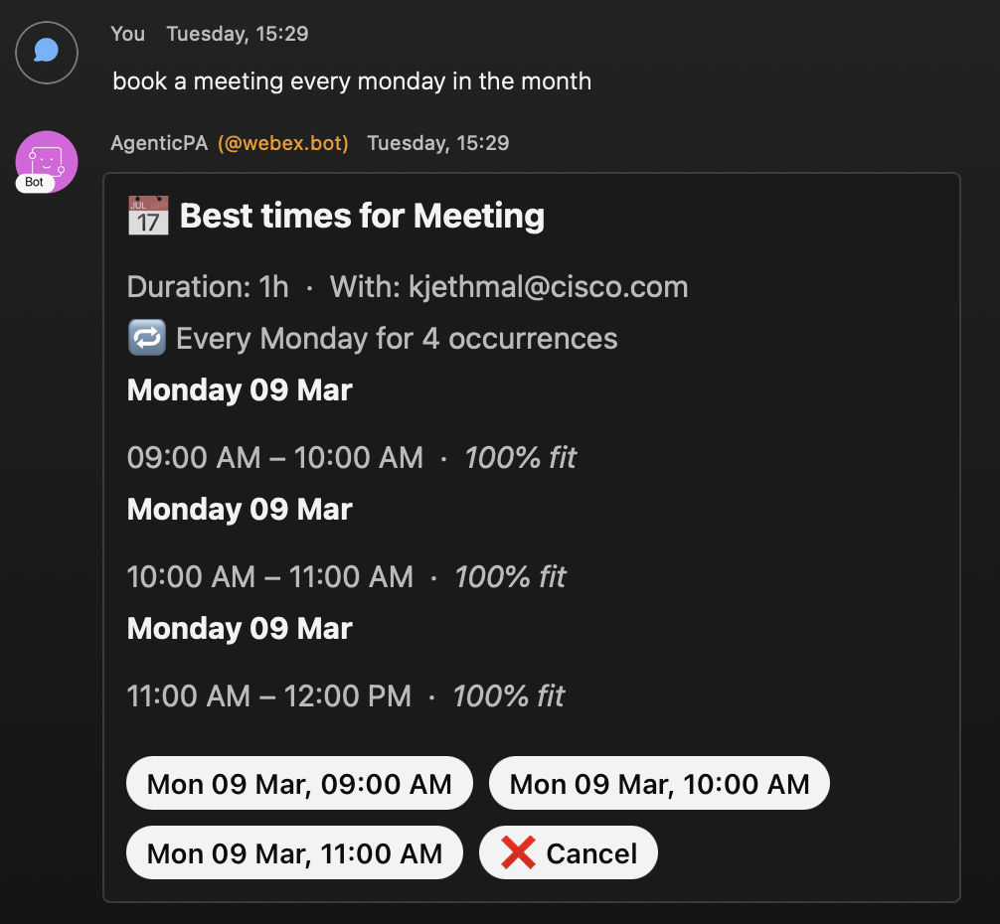
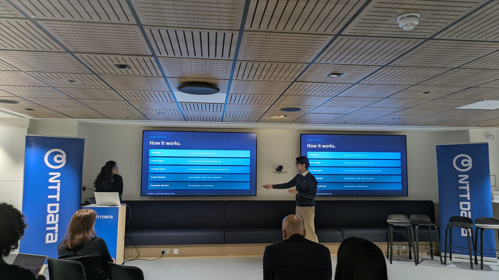
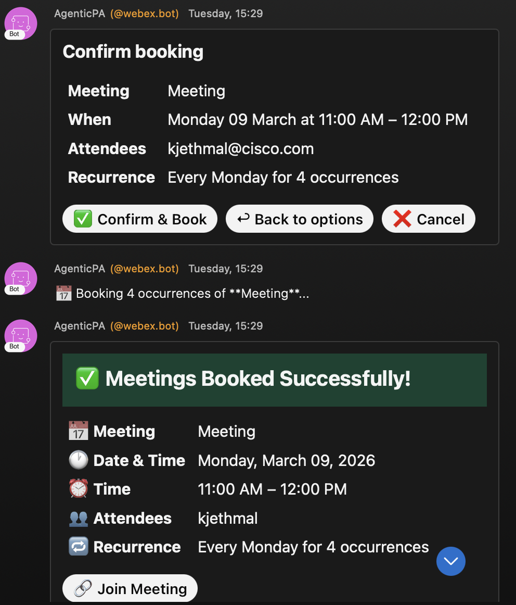

Full Prototype Complete
February 28, 2026
We finished February on a high note with a fully functional prototype and a successful presentation at NTT Data!
Completing the multiagent system
Over the final weeks of February, we successfully implemented the complete multiagent architecture. Our system now includes:
- Planner agent: Creates and manages to-do lists based on user requests
- Scheduler agent: Handles meeting scheduling and calendar management
- Orchestrator: Coordinates between agents and manages the overall workflow
The orchestrator acts as the brain of the system, determining which agent should handle each user request and managing the communication between agents when multiple agents need to collaborate on a task.

Setting up a temporary database
To support user preferences and maintain conversation context between sessions, we set up a temporary database. This allows our system to store and retrieve important information such as meeting preferences, preferred time slots for different types of meetings, and whether the user is authorised with Webex.
The database implementation provides a foundation for more sophisticated personalisation features that we plan to build in the coming weeks.
Presentation at NTT Data

We presented our full prototype at NTT Data and received good feedback on the project. The team showed interest in our multiagent architecture and the practical applications for workplace productivity.

Several members of the NTT Data team provided valuable suggestions for future enhancements.
Looking ahead
With a working prototype and positive feedback from industry professionals, we're energised to continue refining the system. Our next priorities include fully implementing user preferences to allow for more personalised meeting scheduling, and integrating web OAuth for more secure and seamless authentication. We also plan to improve the natural language understanding and conduct more extensive user testing.